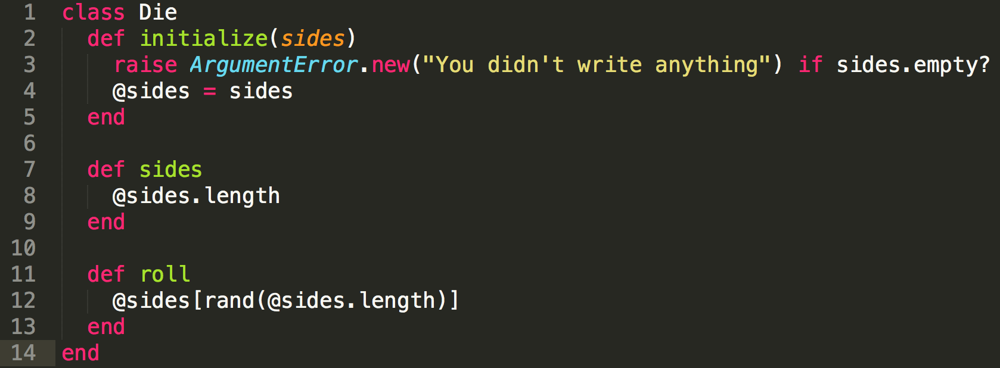

DBC Week 5 Technical Blog Post
Ruby Classes
March 7, 2015
What is a Ruby Class?
A class is the blueprints from which individual objects are created. When a new class is created, an object of type class is initialized and assigned to a global constant. The best way to show how this works would be modeling a real world object using a ruby class. Below is the Die class that we had to create for this week's challenges:
Modeling Dice Rolls
The first method in every class will be an initialize method, which is unique in Ruby. When you create a new Die object, Ruby creates an uninitialized object and then calls that object's initialize method, passing in any parameters that were passed to new. For our Die class, the only parameter is the number of sides that the dice has.
You might also have noticed the usage of the @ sign inside each method. Using @ will create an instance variable, which will record the data of a specific instance of your class. You can have form several instances of class Die, such as a 6 sided, 10 sided or even 20 sided die.
In this class, we created two class methods sides and roll. The first method will tell you how many sides the dice has and the second method will "roll the dice" and give you a random output. You can call a method by creating a new object as shown below:
a = Die.new(6)
a.roll
Doing so, will create a new 6 sided die and tell it to roll the dice and output a random number from 1-6!